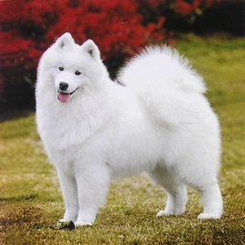

藏獒 藏獒，又名西藏獒、獒犬、番狗、龙狗。原产于中国青藏高原，是一种高大、凶猛、垂耳的猛犬。身长约120厘米左右，体毛粗硬，丰厚，外层披毛不太长，底毛在寒冷的气候条件下，则浓密且软如羊毛，耐寒冷，能在冰雪中安然入睡。而在温暖的气候条件下，则非常稀少。性格刚毅，力大凶猛，野性尚存，使人望而生畏。护领地，护食物，善攻击，对陌生人有强烈敌意。它还是犬类之中的王者。 |
挪威森林猫 顾名思义，就是在挪威森林里生存的猫，斯堪地半岛特有的品种，起源不明，挪威森林猫祖先生长的环境非常寒冷恶劣，所以，它拥有比其他品种的猫更厚的皮毛和强壮的体格。挪威森林猫性格内向，聪明机灵，爱动，喜欢冒险，而且能抓善捕，有“能干的狩猎”的美誉。不适宜长期饲养在室内，最好在有庭院宽敞的家庭。 |
|  萨摩耶犬 萨摩耶犬又名萨摩，萨摩耶犬以西伯利亚牧民族萨摩人而命名 ,一向被用来拉雪橇和看守驯鹿。萨摩耶犬有着非常引人注目的外表，体格强健，雪白的皮毛，微笑的脸和黑色而聪明的眼睛。萨摩耶犬身体非常强壮，速度很快，是出色的守卫犬，但又是温和而友善的。 |
安哥拉猫 起源于土耳其，是16世纪非常受欢迎的品种。19世纪中期，波斯猫的出现，地位开始降低。安哥拉猫有褐、红、黑、白四种毛色，丝绸般的长毛。安哥拉猫动作敏捷，非常爱干净，性格特立独行，不喜欢人抚摸、拥抱。 |
柴犬 柴犬的名字发源于日本中央高地，在文献上，为昭和初期的日本狗保存会的会刊「日本狗」所采用。「柴」是「打柴人」的时候的「柴」，指小型的杂木。由于柴犬能巧妙地穿过杂木帮助打猎，而且红褐色的毛色与枯萎的柴相似，故名。亦有人认为古语的「柴」，是把信州的柴村作为起源的意思。 |
布偶猫 原产美国，又称“拉布拉多猫”，是杂交品种，是现存体型最大、体重最重的猫。被毛丰厚，四肢较长且富有肉感。性格温顺，对人友善，举止优雅，性格类似于狗，忍耐性强，常被误认为缺乏疼痛感，能容忍孩子的抓挠，适合家庭孩子饲养。故而经常被称之为“仙女猫”。 |
| ...... | ...... |